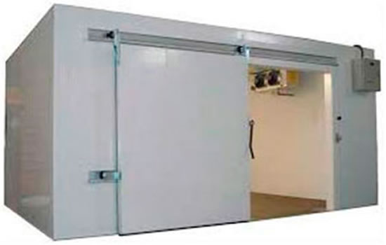

Instalação de câmaras frias
- Avaliação das necessidades do estabelecimento
- Planejamento e dimensionamento conforme a aplicação
- Montagem e instalação dos componentes
- Testes e verificação de funcionamento
A Climátis oferece soluções em instalação, manutenção preventiva e corretiva de câmaras frias comerciais em Curitiba e região metropolitana. Atendimento para estabelecimentos que dependem de refrigeração confiável para conservação de produtos e continuidade das operações.
A câmara fria é um compartimento isolado termicamente, desenvolvido para armazenar produtos com controle de temperatura. É utilizada em mercados, restaurantes, hotéis, frigoríficos e outros estabelecimentos que dependem de conservação contínua.
A Climátis avalia as necessidades do estabelecimento para planejar a instalação ou orientar a manutenção conforme o sistema de refrigeração, o controle de temperatura e as condições de operação de cada equipamento.

A assistência técnica para câmara fria começa pela avaliação do equipamento e da necessidade do estabelecimento. O escopo é definido antes da execução.
O conserto de câmara fria, a necessidade de peças e os procedimentos indicados dependem de avaliação técnica prévia e do orçamento aprovado.
Instalação e manutenção de câmaras frias para as necessidades de cada operação em Curitiba e região metropolitana.
Armazenamento refrigerado conforme as necessidades dos produtos e da operação.
Câmaras para conservação de produtos resfriados e congelados.
Refrigeração para ingredientes e produtos conforme a aplicação.
Conservação de insumos com atenção à rotina de recebimento e uso.
Armazenamento conforme o volume, os produtos e o projeto da câmara.
Avaliação das necessidades de empresas com refrigeração comercial.
A temperatura de operação depende do produto armazenado e do projeto da câmara. O ajuste deve respeitar as especificações de conservação de cada produto.
Conserva produtos que precisam permanecer refrigerados sem congelar. A manutenção verifica se a temperatura se mantém estável, com circulação de ar e vedação adequadas.
Mantém produtos congelados nas condições previstas para armazenamento. O diagnóstico inclui o sistema de degelo, o isolamento e a capacidade de refrigeração para a carga utilizada.
A rotina é definida conforme o projeto, os componentes instalados, o uso e o estado do equipamento.
A manutenção preventiva de câmara fria ajuda a identificar problemas antecipadamente, reduzir o risco de paradas inesperadas e acompanhar as condições de funcionamento.
A inspeção e os cuidados previstos no plano contribuem para a preservação dos componentes e apoiam a continuidade operacional. A rotina depende do equipamento, da utilização, da criticidade da operação e das recomendações do fabricante.
A preventiva não elimina todas as falhas nem garante economia de energia.
Diferentes causas podem produzir sintomas semelhantes. O diagnóstico técnico é necessário para identificar a origem e indicar o atendimento adequado.
Carga de produtos, circulação de ar, vedação e sistema de refrigeração precisam ser avaliados.
O acúmulo pode restringir a passagem de ar e estar associado a degelo, umidade ou ventilação.
A avaliação considera alimentação elétrica, controles, proteções e condições do compressor.
Sensores, controle, abertura de portas e condições de operação podem influenciar a estabilidade.
Gaxetas desgastadas ou desalinhamento podem permitir a entrada de calor e umidade.
O ciclo, os componentes de controle e a drenagem devem ser verificados conforme o projeto.
Uma fina camada de gelo pode se formar durante a operação e ser removida pelo degelo. Quando o acúmulo persiste, a passagem de ar diminui e o rendimento da câmara pode cair.
Evaporador sujo, ventiladores com falha ou produtos bloqueando a circulação de ar dificultam a troca de calor e favorecem a formação excessiva de gelo.
Portas abertas, gaxetas desgastadas e carga de produto acima da capacidade prevista aumentam a entrada de calor e umidade e prolongam o trabalho do compressor.
Falhas no ciclo de degelo ou no escoamento da água podem causar novo congelamento junto ao evaporador. A avaliação identifica a causa antes do reparo.
Entre em contato com a Climátis e solicite uma avaliação técnica.
Sim. A Climátis oferece manutenção preventiva e corretiva de câmaras frias comerciais em Curitiba e região metropolitana. O atendimento considera o equipamento, os sintomas e as condições de operação.
Sim. O serviço inclui avaliação das necessidades, planejamento e dimensionamento conforme a aplicação, montagem, instalação dos componentes e testes. O escopo é definido após avaliação técnica.
Temperatura acima do ajuste, oscilações, excesso de gelo, compressor que não liga, falhas de vedação e problemas de degelo indicam a necessidade de avaliação. Ruídos anormais, drenagem obstruída e funcionamento prolongado também merecem atenção.
A frequência depende das características do equipamento, da utilização, da criticidade da operação e das recomendações do fabricante. A avaliação técnica orienta a definição de uma rotina adequada; não há um intervalo único para todas as câmaras.
As causas podem incluir entrada de calor pela porta, carga acima da prevista, circulação de ar insuficiente ou falhas no controle e no sistema de refrigeração. O mesmo sintoma pode ter origens diferentes, por isso é necessário diagnóstico antes de indicar um reparo.
Falhas de degelo, entrada de ar úmido, sujeira, ventilação insuficiente e problemas de drenagem podem contribuir para o acúmulo. A avaliação deve considerar o projeto e as condições de uso para identificar a causa.
Ela pode reduzir o risco de paradas inesperadas ao identificar condições de falha e acompanhar o funcionamento. Não elimina todas as falhas nem garante economia de energia; os resultados dependem do estado e do uso do equipamento.
Use o botão de orçamento pelo WhatsApp ou preencha o formulário desta página. Informe se precisa de instalação ou manutenção, o tipo de câmara, a necessidade ou os sintomas e o bairro ou município de atendimento.
Informe o serviço desejado, se a câmara é de resfriados ou congelados, a temperatura de trabalho, a necessidade ou o problema percebido e o bairro ou município de atendimento.
Manutenção com garantia de 3 meses.